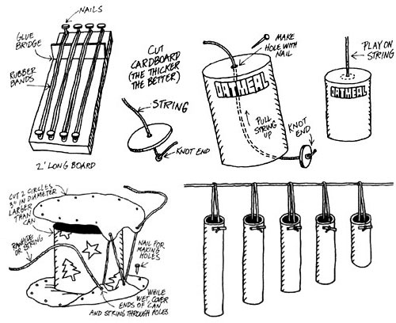

COUNTRY SKILLS
Tempted by that Fender bass in the store? Try a $2 model first.
You don't have to be a skilled musician to make your own instruments for the family holiday sing-along. Here are some simple musical instruments, fashioned largely from recyclables, that the whole family can have as much fun making as playing.
The Strings
Every band needs a guitar. Make yours from a 2" x 4", 1" x 4", or any scrap board about 2-feet long. Sand the board smooth and paint it in holiday colors with traditional designs. Evenly space three or four nails a few inches from the top and bottom, lining up the nails at one end with the nails at the other.
To produce a rich sound when the strings are plucked, your guitar will need a bridge that keeps the strings from hitting the wood. Make a bridge from a 1 1/2"-wide paint-stirring stick. Cut off a 4" piece and glue it across the board toward one end, then nail it in place from the back.
Use rubber bands for guitar strings. Different thicknesses will give you different pitch. Another way to vary pitch is to stretch the bands tighter: the tighter they are, the higher they sound. Try different combinations until you're able to hit your perfect note.
Back your guitar with a bungee bass that has a fine enough tone to fool a professional. All you need is a bungee cord and a sturdy cardboard carton. Remove the top and wrap the carton in colorful holiday paper. Poke holes in opposite sides, near the top edge, and hook in the tiedown (your bass will look like a square bucket with a flexible handle). To play the bass, hold it up by its handle and pluck the bungee.
If you prefer a variable-tone bass fiddle, you'll need a long thin shoelace or piece of string, a washer (a large button, or a washer cut from heavy cardboard will work), and a large empty oatmeal carton. Decorate the carton with wrapping paper or contrasting ribbons wound in barberpole fashion.
Anchor one end of the shoelace to the washer. Thread the lace through holes in the centers of the bottom and top of the box. With the washer at the bottom, hold the box down with your foot, wrap the free end of the shoelace around your hand, and pluck the lace with your other hand. To vary the sound, hold the shoelace so it's tighter or looser, longer or shorter.
Drum
Besides a guitar and a bass, your band will need at least one drum. To make yours, you'll need a length of rawhide strong string, a piece of chamois (softened sheepskin, available from any good auto parts store) and a large metal can with both ends removed. The can might be any size from a twopound coffee tin to a wellcleaned 5-gallon can. The larger the can, the bolder your drum will sound. Paint the can a bright color and stencil on festive designs. 'lake care in decorating your drumit will last a lifetime and could become a family heirloom.
You'll need two circles of chamois at least 3" larger than the diameter of the can. Lay each circle on an old board and use a large nail to punch evenly spaced holes about an inch apart around the edges. Soak both chamois circles in ice water for about 20 minutes, or until they feel rubbery. While the chamois is still wet, cover the ends of the can and use rawhide or strong string to tightly lace the two pieces together. Wait 24 hours for the chamois to dry and shrink, making your drumhead nice and tight.
Drumsticks
To fashion a pair of drumsticks you'll need a sturdy wooden dowel, some felt cloth, and white glue. Cut two 12" lengths from the dowel and paint or varnish them. Cut the felt into 1"-wide strips, soak the strips in white glue, and wrap the strips around one end of each dowel, making two knobs of equal size. (For a traditional holiday look, paint the sticks red and use green felt for knobs.)
If you later lose your drumsticks, you can quickly fashion a new pair from chopsticks or any straight sticks, making knobs by winding on a couple of plastic grocery bags or an old pair of nylon stockings. In a real pinch, grab a rubber spatula or a wooden spoon from the kitchen. For special effects, use a basting brush or an old whisk broom cut in half as a "swish" mallet.
Clay flowerpot bells will add a nice accent note to your holiday music. Make individual handheld bells, one per bell ringer, or make a set of bells to be played by the same musician. Pots of different sizes make different tones. Thin pots ring more clearly than thick ones.
Tie a short stick or piece of dowel to one end of a length of light rope. Thread the other end through the pot's hole, with the stick on the inside. Make a handle in the free end of the rope by tying either a loop or a fat knot. To play the bell, hold the rope up so the pot swings freely and gently strike it with a homemade mallet or a wooden spoon.
For a set of two or more bells with different sounds, tie ropes from different size pots to an additional length of rope tightly strung between two stationary objects, such as the backs of two heavy chairs, or hang the pots from a sturdy wooden dowel, carefully spacing a few inches apart so they don't touch.
Xylophone
A xylophone sounds great and is fun to play. To make one, you'll need a length of fishing line, a rope, 6-8 feet of metal tubing (from a plumbing supplier), a hacksaw, and a drill with a metal bit.
Use the hacksaw to cut the metal tube into 6 to 9 pieces, the longest one 12" and the others progressively shorter to about 8". The shorter the tube, the higher it will sound when struck. The pitch each tube produces will depend not only on its length, but also on its diameter and whether it is made of brass, copper, or iron. File both ends of each tube smooth, so no one can get cuts or metal splinters in their fingers.
Drill two small holes through one end of each tube and tie a length of fishing line through the holes. Bang the tubes along a rope stretched between two stationary ob jects. To keep the tubes from sliding together, tie big knots in the rope between them. Play your xylophone with another pair of homemade mallets.
Chimes
For truly sparkling melodies, play water music. You'll need eight spoons and eight glasses or bottles. Thin, delicate glass makes a more musical sound than thick glass. Crystal drinking glasses make the loveliest sound of all.
For different tones, fill each glass to a different level. The more water you use, the lower the tone will be. Arrange the glasses so the tones run from the lowest to the highest. To create a true scale, tune your glasses to the first eight notes of "Joy to the World, the Lord Is Come."
Test your scale by tapping the glasses and adjusting the amount of water until you find the right notes. The more gently you tap, the more sparkling the sound will be. For a full, rich tone, relax your hand and let the spoon swing freely.
To create harmony, tap two glasses at once. Assuming #1 is your lowest note and #8 your highest, harmonious combinations include: 3 and 5, 4 and 6, and 6 and 8. Add a festive look by putting a drop of food coloring into each glass.
Round out your rhythm section with shakers (plastic containers with snap-on lids, filled with rice or unpopped corn) and maracas (dried beans or lentils in small ornamental paper bags, blown up, and tied with colorful ribbon or yarn). Strike up the band at this year's holiday songfest, and take along the more portable of your homemade instruments to provide background for your carols as you serenade from house to house.
These musical ideas were inspired by Avery Hart mud Raid Mantell, who wrote Kids Make Music (1993, Williamson Publishing Company 1810-234-8791).
|
|
|
 |